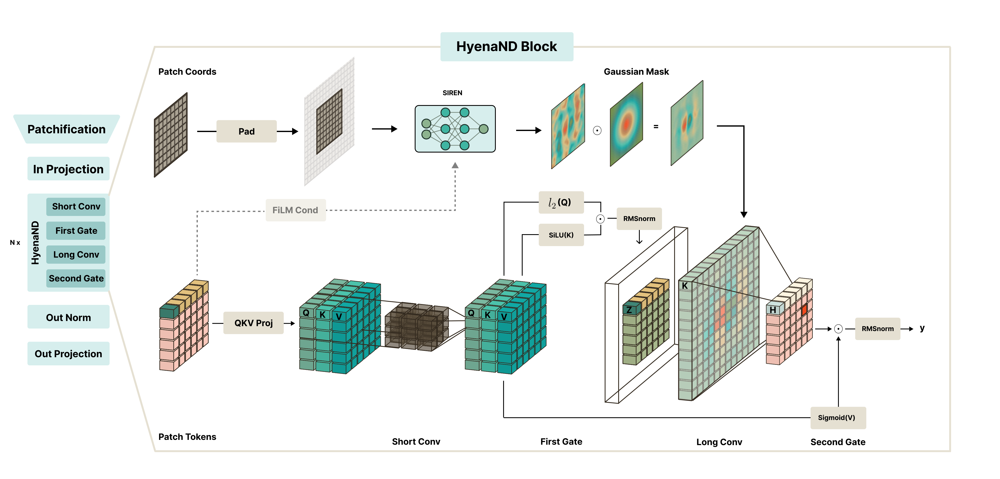

How HyenaND works#
This page builds up the operator at the heart of the library starting from attention, which most readers already know, and shows how HyenaND keeps what makes attention work while shedding its costs. For reference material, Architecture documents the stack and nvsubquadratic.ops: FFT convolution primitives documents the kernels.
Start from attention#
Self-attention is the operator everything else is measured against. Two properties make it work:
Global receptive field. Every position can look at every other position, so a token’s representation can depend on context arbitrarily far away.
Data-dependence. The mixing weights are computed from the input: the attention matrix \(A(x)\) is built on the fly for each sequence, rather than being a fixed set of learned weights.
The price for both is the \(N \times N\) attention matrix: compute and memory grow as \(O(N^2)\) in the number of tokens \(N\). For a 256×256 image that is already 65k tokens; for video or a 3D volume it is hopeless. Attention also has no native notion of 2D/3D geometry. To apply it to an image you flatten the grid into a 1D sequence and let the model relearn that two pixels are neighbours.
HyenaND’s goal is to keep the global receptive field and the data-dependence, but pay \(O(N \log N)\) instead of \(O(N^2)\), and to do it directly on the data’s native 2D/3D geometry.
Attention |
Mamba |
HyenaND (ours) |
|
|---|---|---|---|
Receptive field |
global |
global (via scan) |
global |
Cost in tokens \(L\) |
\(O(L^2)\) |
\(O(L)\) |
\(O(L \log L)\) |
Native dimensionality |
any (but geometry-blind) |
1D only |
native 1D / 2D / 3D |
Data-dependent mixing |
attention matrix \(A(x)\) |
selective state |
gating |
Mamba is the other popular subquadratic option, but it is inherently 1D: to process an image it has to pick an ad-hoc raster scan order, and no single 1D ordering respects 2D locality. HyenaND is global and subquadratic while operating directly on multi-dimensional data.
How HyenaND gets the global receptive field cheaply#
A global receptive field means convolving each position with a filter as large as the whole input. Done naively, a convolution of an \(N\)-element signal with an \(N\)-element kernel costs \(O(N^2)\), so we have not saved anything. Two ideas fix this.
1. An implicit filter#
Instead of storing one learnable weight per kernel tap (which would be \(N\) parameters for a global kernel, and a different count for every input size), HyenaND generates the kernel from a small neural network, a SIREN MLP \(f_\theta\), evaluated on the grid coordinates:
The filter is a continuous function of position, not a table of numbers. This is the difference between storing a line as the equation \(y = mx + b\) versus listing every point on it. Because \(f_\theta\) is continuous, the same learned kernel can be sampled on a grid of any size or aspect ratio: train at 64×64, evaluate at 256×256, no retraining. A learned Gaussian window \(w\) multiplies the filter so its influence can taper with distance.
2. The convolution theorem (FFT)#
Even with a compact parametrisation, applying a global kernel by sliding it across the input is still \(O(N^2)\). The convolution theorem turns the spatial convolution into an element-wise product in the frequency domain:
The two forward FFTs and the inverse each cost \(O(N \log N)\), the element-wise product is \(O(N)\), and, crucially, the total cost is independent of kernel size. A global kernel costs no more than a tiny one. In \(N\) dimensions the FFT runs on the native grid, so a 2D image or 3D volume is convolved on its real geometry with no flattening:
This frequency-domain step is the FFT convolution (FFTConv) that the nvsubquadratic.ops: FFT convolution primitives primitives implement, and it is what makes a global-kernel sequence model subquadratic. The full math primer (linear vs circular boundaries, precision, the decision tree for picking an op) lives there.
How HyenaND stays data-dependent: gating#
Attention is data-dependent because it builds the mixing matrix \(A(x)\) from the input. HyenaND never materialises such a matrix. Instead it interleaves the convolution with element-wise gating: multiplying the signal by a data-derived mask. A convolution is a fixed (Toeplitz) linear map; multiplying its input and output by input-dependent gates makes the effective operator depend on the data, at the cost of a handful of element-wise products rather than an \(N \times N\) matmul.
Just as attention forms three projections \(q, k, v\) from the input,
HyenaND forms its own projections and threads them through a gate →
long-convolution → gate sandwich. This is the same \((q, k, v)\) mixer
signature that nvsubquadratic.modules.sequence_mixer.QKVSequenceMixer
dispatches over, which is why swapping Hyena for attention, CKConv, or
Mamba in a network is a one-line config change.
Putting it together: the HyenaND operator#
The diagram below is the operator that gives the stack its name. It maps
1:1 onto the Short Conv → First Gate → Long Conv → Second Gate block you
see throughout the network code.

Two paths run and meet at the long convolution:
Kernel synthesis (top), “what filter to use.” Grid coordinates feed the SIREN MLP \(f_\theta\), are masked by the learned Gaussian window \(w\), and are FiLM-conditioned on a control variable \(z(\mathbf{x})\) pooled from the input’s register tokens. The result is an input-dependent, implicitly-parameterised \(N\)D kernel \(K(\mathbf{x})\) that is global, freely learned, and computed once per input.
Data path (bottom), “what to filter.” The input is projected into \(\mathbf{q}, \mathbf{k}, \mathbf{v}\) (with a depthwise short conv for local context). The inner gate \(Z = \mathbf{q} \odot \mathrm{SiLU}(\mathbf{k})\) is convolved with \(K(\mathbf{x})\) via the \(N\)D FFTConv above, then the outer gate \(O = H \odot \mathrm{SiLU}(\mathbf {v})\) conditions the result before a final norm.
Read top-to-bottom: synthesise an input-dependent global kernel, gate the signal, convolve it cheaply in the frequency domain, gate again. This gives attention’s two properties, a global receptive field (the long implicit conv) and data-dependence (the two gates), at \(O(N \log N)\) on native geometry.
A worked trace#
The snippet below runs the actual Hyena operator from the diagram on a
batch of 32×32 images, with no random stand-in kernel. Every argument
maps onto a box in the block above: the CKConvND global conv is the SIREN
kernel-synthesis + FFTConv path (top), the depthwise Conv2d is the short
conv, the two SiLUs are the inner and outer gates, and the LayerNorms are
the PixelHyena and output norms. It runs on CPU, so no GPU is needed:
import torch
from nvsubquadratic.lazy_config import LazyConfig
from nvsubquadratic.modules.ckconv_nd import CKConvND
from nvsubquadratic.modules.hyena_nd import Hyena
from nvsubquadratic.modules.kernels_nd import SIRENKernelND
from nvsubquadratic.utils.qk_norm import L2Norm
H, X, Y = 64, 32, 32 # hidden channels, 2D grid
# Top path of the diagram: CKConvND synthesises an implicit kernel with a
# SIREN MLP, then applies it via the ND FFTConv — one O(N log N) step.
global_conv_cfg = LazyConfig(CKConvND)(
data_dim=2,
hidden_dim=H,
kernel_cfg=LazyConfig(SIRENKernelND)(
out_dim=H,
data_dim=2,
mlp_hidden_dim=32,
num_layers=2,
embedding_dim=32,
omega_0=10.0,
L_cache=X,
use_bias=True,
hidden_omega_0=1.0,
),
mask_cfg=LazyConfig(torch.nn.Identity)(), # Gaussian-window slot (off here)
grid_type="double",
fft_padding="zero",
is_causal=False,
)
hyena = Hyena(
global_conv_cfg=global_conv_cfg,
short_conv_cfg=LazyConfig(torch.nn.Conv2d)( # depthwise short conv on [Q;K;V]
in_channels=H * 3,
out_channels=H * 3,
kernel_size=3,
padding=1,
groups=H * 3,
),
gate_nonlinear_cfg=LazyConfig(torch.nn.SiLU)(), # the two gates
pixelhyena_norm_cfg=LazyConfig(torch.nn.LayerNorm)(normalized_shape=H),
qk_norm_cfg=LazyConfig(L2Norm)(),
output_norm_cfg=LazyConfig(torch.nn.LayerNorm)(normalized_shape=H),
).eval()
B = 2
x = torch.randn(B, X, Y, H) # channels-last image batch [B, X, Y, C]
y = hyena(x, x, x) # q = k = v = x → self-mixing
print(y.shape) # torch.Size([2, 32, 32, 64])
Reading it against the diagram: hyena(q, k, v) takes the three projections
(here all equal to x, the self-mixing case), runs the depthwise short conv
for local context, forms the inner gate \(Z = \mathbf{q} \odot
\mathrm{SiLU}(\mathbf{k})\), convolves \(Z\) with the SIREN-synthesised kernel
inside CKConvND (the single \(O(N \log N)\) FFTConv, the only expensive
step), then applies the outer gate \(O = H \odot \mathrm{SiLU}(\mathbf{v})\) and
the output norm. In a full network the three projections come from separate
linear layers, exactly as attention forms its own \(q, k, v\).
For the kernel-level view, one tensor pushed through the bare FFTConv primitive, see the minimal forward pass in Getting Started.
Where to go next#
Architecture: the three-library stack (nvSubquadratic / subquadratic-ops / megatron-core) and the BHL/BLH layout conventions.
nvsubquadratic.ops: FFT convolution primitives: the FFT-convolution math primer and the decision tree for choosing a primitive (linear vs circular, fp32 vs fp16, chunking, fused CUDA paths).
examples/: native 2D/3D global context applied to images, video, and PDE rollouts.Glossary: quick definitions for SIREN, FiLM, implicit filter, Toeplitz, register tokens, BHL/BLH.